怀念--王菲 @ Mar 11, 2009
也许喜欢怀念你 多于看见你
我也许喜欢想象你 多于得到你
我也许喜欢想象你 不需要抱着你
我也许喜欢想象你 受不了真一起 啊~
这个周末《恋爱的犀牛》就要等着我去膜拜那些“经典的台词”了，上个月Angie定了两张票。她说已经看腻我的发型，让我这次在上海把头发全剪了......其实我自己也腻了，常拿发卡把刘海夹成奇形怪状，难怪有同事说：“你怎么这么个发型啊，最近怪怪的。”其实不需要剪，它也会象落叶一样凋零。
听yucheng说在上海的剧院里看到过廖一梅，安静而低调的站在幕边，面带微微的笑，清新可人的摸样，一点不起眼。yucheng是带着妈妈、外婆和丈夫一起去看的这部话剧，看完后她的妈妈快乐而满足。据说《恋爱的犀牛》演出十年来，这次是改编后的新版，虽说不再是大牌演员出演，想到能亲耳凝听并感受那些所谓的经典台词，便渐渐兴奋。如果你也想体会一下这部话剧的经典，3月27日-3月29日他们还将在杭州大剧院演出。
每每要跑去上海看喜欢的节目，才体会到大城市的优越之处。本来，对上海是万万没有好印象的，受了yucheng这个土生土长上海人的影响，逐渐转变看上海的角度，并且为陈丹燕笔下的上海女子套上yucheng的形象，实在是想象不出还有哪个上海女子更符合的了。四月本来有一场OASIS在上海的演唱会，等我在网上定票时才发现已经开始办理退票了，是因为他们支持藏独而被迫取消在中国市场的演出吗？
看话剧前先热个身，捧着廖一梅的小说《悲观主义的花朵》看了看。真巧，在所有鬼怪中我最喜欢的也是吸血鬼。那些插图是某网站某00后小女孩写真，除了鬼秘，惊悚，颓废还有血腥，没忍心放这里血腥的。这组写真的一部分还是挺酷的，我爸妈如果给小时候的我整这么一组相片，成年后我就给你们看，让你们羡慕死我，那不仅仅是酷，简直就是重金属摇滚的童年！事实上我的童年照片还真少…孩子都这么拍写真了，赶明我们是不是就可以创意地叼着奶嘴，半裸的垫着尿不湿出现在写真集里了呢？谁不怀念童年啊，尤其经济不好的时期，有人管吃管住，想玩就玩想睡就睡，还不用上班！童年简直是太酷了！

摘抄自廖一梅的小说《悲观主义的花朵》：
为爱而生，很多人这样标榜自己，为爱而生？不，我不为爱而生，爱是我躲之不及的怪物，是人生对我抛出的媚眼，顾盼有情中生出的一点眷恋，是这世界将你抽空、打倒，使你放弃尊严的唯一利器。别大言不惭地谈论为爱而生吧。
我们一生中总要遭遇离开心爱人的痛苦，那可能是分手，也可能是死亡，对此即使我们早有准备也无力承当。人类唯一应该接受的教育就是如何面对这种痛苦，但是从来没有人教给过我，我们都是独个地默默忍受，默默摸索，默默绝望。
我知道我终将老去，没有人能阻止这件事的发生，你的爱情也不能。我将从现在起衰老下去，开始是悄无声息地，然后是大张旗鼓地，直到有一天你看到我会感到惊讶----你爱的人也会变成另一个摸样。
我们都会变成另一个摸样，尽管我们都不相信。
我们从年轻变得成熟的过程，不过是一个对自己欲望、言行的毫无道理与荒唐可笑慢慢习以为常的过程，某一天，当我明白其实我们并不具备获得幸福的天性，年轻时长期折磨着我的痛苦便消逝了。
“凡是改变不了的事我们只能逆来顺受。”我们的需求相互矛盾、瞬息万变、混乱不堪，没有哪一位神祗给予的东西能令我们获得永恒的幸福。
对于人的天性我既不抱有好感，也不抱有信任。
生活的真实性都值得怀疑，其他的就更别说了。

......我惊讶地发现，从小热爱的那些诗人作家个个放荡不羁、道德败坏，被人指责为寡廉鲜耻。第一个是拜伦，然后是王尔德。
......总之，我是一个不能确定的、勉强可以被称为好学生的人。这勉强已经预示了我将开始摸棱两可、左右为难的人生，准备遵守世俗的准则，而在内心偷偷爱着拜伦和王尔德，渴望与众不同的生活。
“犯罪不是庸俗，但所有的庸俗都是犯罪。”
“只有特别之物才能留存下来。”特别，就不论善恶。我寻求特别之物。
“我不仅要做一个恶棍，而且要成为一个怪物，你们会宽恕我所做的一切。换句话说，我要把你们的衡量标准变成荒唐可爱的东西。”
这是我知道的、最令我颤抖的豪言壮语，在一百年以前，被最优雅的人用优雅的态度说出，比长发愤怒青年的重金属喊叫更对我的胃口。
......“可以理解，道德败坏的人没有禁忌，更加有趣。”
“有趣”----我努力想追求正确的生活，实际上却一心向往有趣的生活。但我既缺乏力量，又不够决断，追逐这种并不适合于我的生活的必然结果是痛苦多于欢乐。但那时我坚持相信那个“白痴”公爵梅希金的说法：“她的眼睛里有着那么深的痛苦，是多么美丽啊！”

确立某种生活准则，并有勇气去坚持这些准则是必要的。可惜大家通常既无勇气坚持善，也无勇气坚持恶，甚至没有勇气坚持随波逐流。更加不幸的是，我对他人有一种与生俱来的领悟力，有了这份本不必的理解，做起事来便难免拖泥带水，对一切都失去了明确的尺度。这对我的生活是个致命的错误。
错误当然不都是丑陋的，有些东西因为错误而格外耀眼。
说说我为什么喜欢吸血鬼，你会明白我要的是什么样的爱情。
吸血鬼的爱情有着爱情中一切吸引我的东西，致死的激情，永恒的欲望，征服与被征服，施虐与受虐，与快感相生相伴的忧伤，在痛楚和迷狂中获得永生......
我不知道谁能带给我这样的爱情。
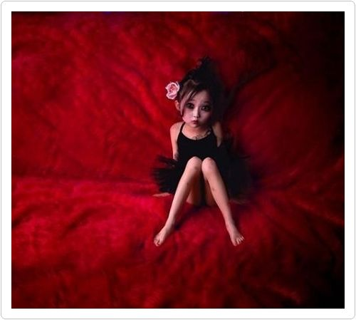
......出于怜悯原谅了他，不是对他的怜悯，而是对人类的怜悯，对自己的怜悯。我们都将怜悯自己，因为我们既无从了解自己，也无法把握自己，我们没有运气成为幸运儿，成为爱情的劫后余生者，生活的劫后余生者，我们只能显得可笑、卑微、没有其他的可能。
如果不能原谅他，我难道能原谅自己做过的那些荒唐事吗？
唯一能够指责他的，是他缺少面对这一切的勇气。
以前有两样东西我是相信的----一个是理性，一个是表达。对于陈天的爱情摧毁了我唯一相信的两样东西。
爱情，你忍不住要伸了手去握紧它，可握住的时候已经碎在手里了。

我经常会产生这样的错觉，觉得我的生活不过是一部电影，下面就要出现一组表示岁月流逝的镜头，再转回来，那些痛苦、绝望的日子已经过去很久，另一个故事又会开始。每一次我都惊讶地发现，居然我还坐在我的蓝色转椅里，什么都没有改变。
其实我们能向生命祈求的只有好运，没有公平，没有意义，没有解释，没有响应......
如果你有好运，恭喜你了。
推荐姐姐买一件基本款的白衬衣，各种搭配总相宜。
她真的买了一件光溜溜没有任何装饰的白衬衣，夹着一点点莱卡。
希望姐姐穿上这件白衬衫显得更自信更漂亮。
在春天若隐若现时，我就早早准备了一堆五颜六色的衣服，把它们集中放在一个地方，以防早晨手忙脚乱地翻箱倒柜，春天真正现身后，我就可以穿上它们配合一下这讨喜的季节，虽然，南京的春天短了点。姐姐说你好象开始选择跳跃的色彩了，不象以前总是黑色、灰色的衣服，是越来越快乐的原因吗？也许吧，不过我还是很衷情于黑色的，因为黑色象白色一样容易搭配，而且低调、神秘。搭配衣服是很烦琐的工作，洪晃的“保八混搭”是不是更靠谱（保证GDP 增长速度不低于8%）呢？混搭是时尚最高级的穿衣境界，而浑身全是名牌最老土老土的。L.A. 的造型师说穿名牌穿得太认真，有点傻。要把名牌穿得随意一点。所有经济指数南下，国外报纸时尚版的编辑都在提倡“爆米花和鱼子酱”的搭配风格。我比较欣赏Stella McCartney的设计，大多作品将混搭与时尚的实用性结合的很完美，印象最深的是她将连衣裙与长西服搭配，几乎适合所有女性。疏不知混搭需要可贵的审美经验，我们大多数人是缺乏这种创意精神的。还是正装容易，买来就搭配好了，没什么花样可操心滴，嘿嘿~
这周收到在卓越定购的十几本书，定书的起因是去上海看话剧前，yucheng在msn上推荐了她喜欢的武康路供我消磨半个下午，然后介绍了陈丹燕的三本书：《上海的风花雪月》、《上海的红颜遗事》和《上海的金枝玉叶》。所以同时我还定购了陈丹燕的其它几本书，和目前比较火的《三杯茶》。买书就象买到喜欢的衣服一样令人欢喜。昨天晚上开始阅读第一本《鱼和它的自行车》，又找回十多年前阅读的沉醉感，幸福感。呵呵~我又可以阅读了，真是太好了，之前总是无法沉浸下来看太多文字的。话语随着浮躁在我心里变得越来越少，整个世界再精彩，我却只贪恋属于自己的那一小块宁静。 这样幸福的存在，不好吗？ 《鱼和它的自行车》里的女主人公去癌症病房实习那段经历既震撼又让人颤抖，死亡原来是裹在烂苹果味里的？！“生活总是宁静无声地流转着，在每一处最细密的转折以后，总是什么也没有。”而今谁还会将奇迹寄托于某人某物？无论将来怎样，我都满足于此，希望每一天能象现在这样拥有平凡而踏实的幸福…度过这有限的生命。
如果每天只工作半天、有现成的午餐、LUKE不被发情的母狗折磨、鞋柜的门不会神经质地弹开，如果，人可以不生病，就更美好了。
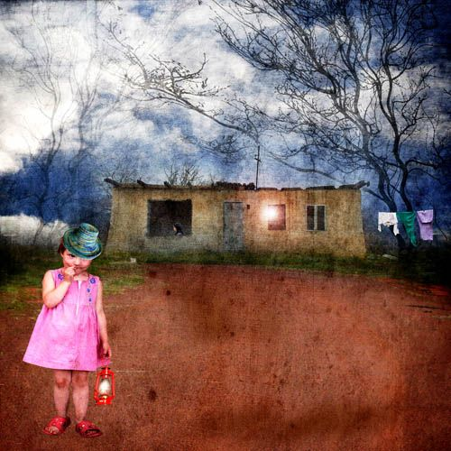
上海火车站．人
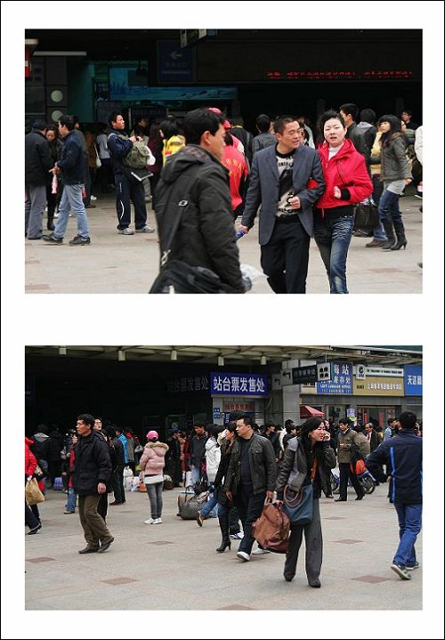

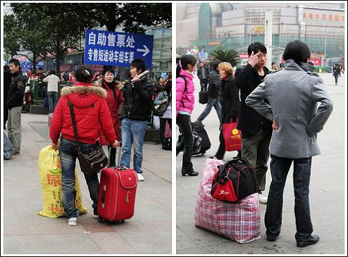
城区．人

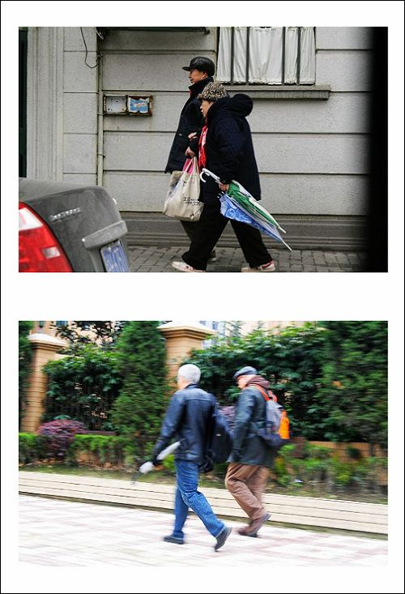

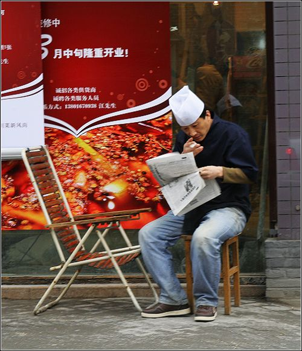

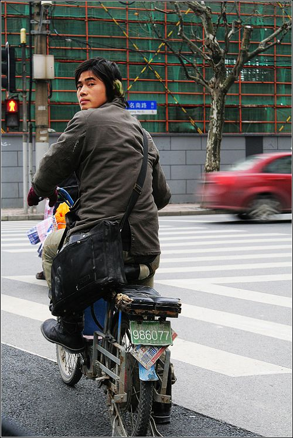
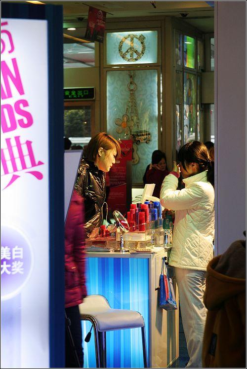
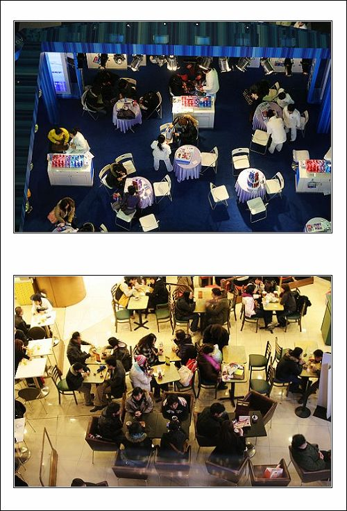
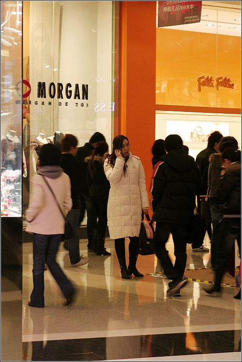
上个周末，从上海开车到家已经是周日凌晨一点多钟。
把车停进车位，发现隔壁车位上停了一辆黑色卡宴 Turbo S，没上牌，新车的光泽在黑夜中闪烁着诱人的光芒。之前这个邻居开一辆黑色的沃尔沃S80，现在添加了一头大怪兽，4.8T 550马力 V8，0-100加速 4.8秒......
太不照顾OX的情绪了，要OX每天自惭形秽停在怪兽旁边么？
太不照顾有理想的年轻人了，一下子买235万的车，显得俺们的理想那么的可怜~颤抖！
甲：“借你把刀去划漆。”
乙：“在他旁边停个拖拉机，冒黑烟、烧劈柴、动静特大那种，每天热车半小时。”
丙：“把OX停到自行车库里。”
丁：“颤抖的原因是理想那么远，现实这么近。”

私人店面，橱窗里有张旧时理发店理发用的椅子，80年代常常能见着的，看到它，就想到热气腾腾跗面的毛巾，师傅手上的剃头刀在绷带上来回打磨的情形...如今这张椅子象古董一样放置在橱窗里了。
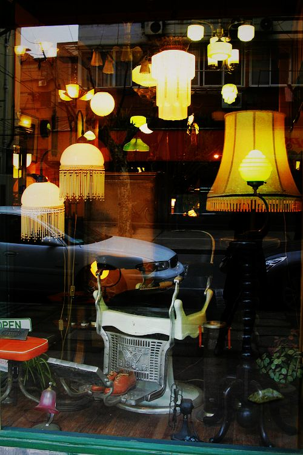
路过一个艺术画廊，门面非常小，被里面屹立着的雕塑所吸引，残缺却充满力量，复杂的对抗与挣扎？不屈不饶，痛苦的坚持？畸形的美？绝望？
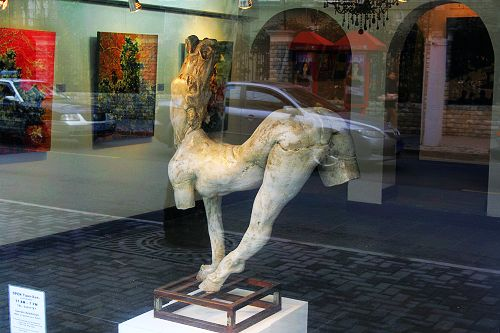
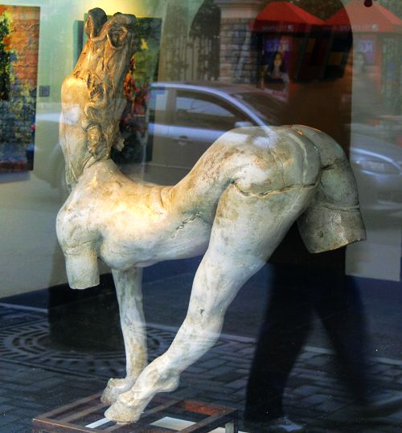
上海大剧院

终于等来我第一场要看的话剧《两只狗的生活意见》，已经是台上演员的第291场。
幸好提前买的票，门口的黄牛票要400一张，简直...欺负外地人么~
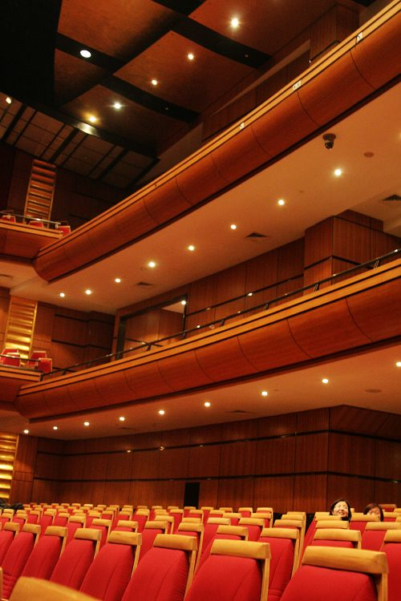
剧院外的广告牌
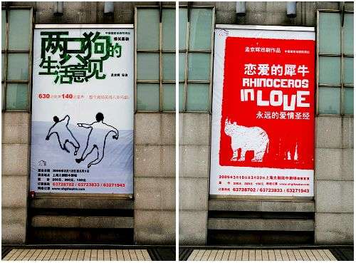
常言道：“演戏的是疯子，看戏的是傻子。”这两位演员估计演的很过瘾，那吐沫、那表情....满场飞呐，演得我坐在下面心里也直喊过瘾。不过两位演员演到291场，他们会是什么感觉？我特喜欢那个瘦子演员，好象叫刘晓晔，因为他的眼睛够小，表情够匪气。
看这幕话剧时，我联想到我们的周围有90%的人人格分裂，如果做话剧演员就挺好，可以将现实中分裂的那部分合理地在舞台上发泄出来，无论台上如何淋漓尽致地疯狂，那都是艺术，卸了妆还是一个社会标准下的正常人。


除了唱歌，演员讲台词没用话筒，剧院不大，上下三层都坐满了。演员的台词功底扎实，吐沫象“喷”........泉一样随着台词喷射在灯光下，真TM带劲！这次我坐在一楼第二排，有那么点小偏。演员与观众还有互动呢，两演员下舞台抢观众的背包、钱包和外套，演着演着突然停下来问候一下场内走动或迟到的观众，不过我觉得大部分被骚扰的观众表现的比较“搓”，扭扭捏捏。
我把自己的包藏在身后，把书垫在屁股底下，然后盼望着两演员能来骚扰骚扰我这个伪文艺青年，可是，一直到演出结束，我这小偏的座位也没被骚扰到，NND。
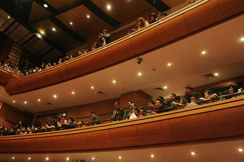

来福想象着他如何悲壮而惨烈的死去，鲜血如何喷洒在四方，他用手枪指着自己的脑袋，从生到死演练着...生死过程变得滑稽而渺小。


两只有理想有抱负的狗，返乡途中。
这是用喜剧形式表达的悲剧么？
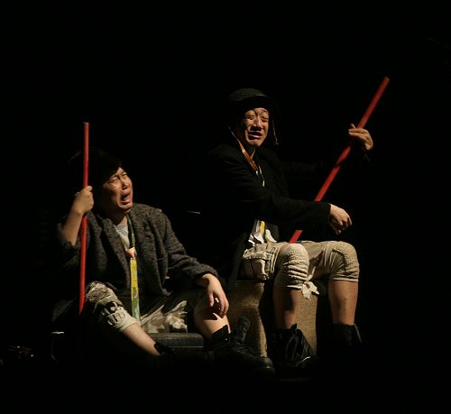
上海大剧院在搞群星慈善会，外面的“迷”们大多数是小女生，还带着迎接自己偶像的道具。而隔壁的中剧场即将演出《两只狗的生活意见》。

不到上海，不知道自己有多穷。
到了上海的武康路，自个儿就是一穷光蛋了。
上海的武康路与南京宁海路相似，许多老式花园洋房很低调的错落在围墙里面，朴素而安静。最便宜的都是小几千万，最贵的一套500平米带个花园的洋房要1.1亿，晕纳。据说有些洋房花钱都买不到，这哪里是有钱人住的房子，而是资本家住的地方。那些洋房看起来一点不起眼，不细心看很容易就错过了。也有些72家房客的普通民宅，有些被有钱人动迁下来了。那些洋房看着很不起眼，但都是张爱玲式的公寓，陈丹燕笔下的小楼。有些是市府的，离休干部的，上海的风花雪月，基本都在那一带了。
有个朋友说：“几千万不够在上海买房子，不如移民加拿大吃利息。”
我在想卖房子的人得缴多少税给政府啊？
嗨，做白日梦的和瞎操心的碰到一起，也只能站在围墙外面看看。

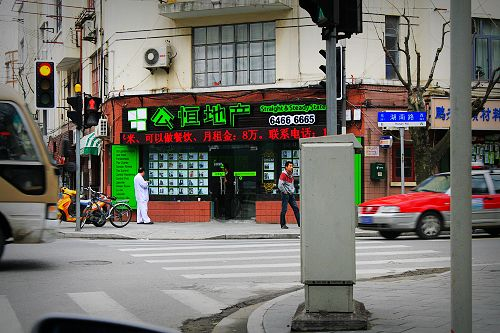
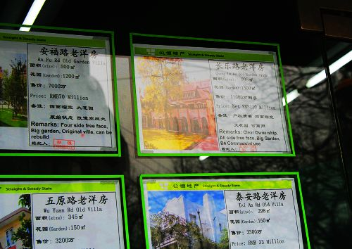

仅半天时间，随意地拍摄，回家翻看相片，却看到与以往不同的上海。
上海和南京一样依然是阴雨天，天色灰蒙蒙的，这座电话亭让人眼前一亮；

《收获》杂志社居然在这里，09年我又开始续订《收获》杂志了。

写着“苔青”的店门禁闭着，因此，苔青于我就是空白的茫然；
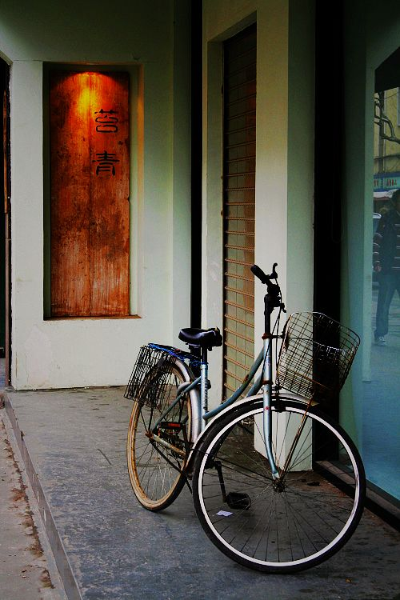
生锈的门把手，又好象是门牌号码？

两扇黑油油的大门虚掩着，里面别有洞天；

好可爱的信箱，有点欧式的感觉，真不知是哪个年代的东西了？
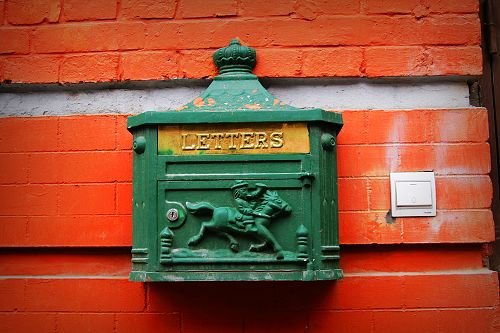
这是一间家具设计店的大门；
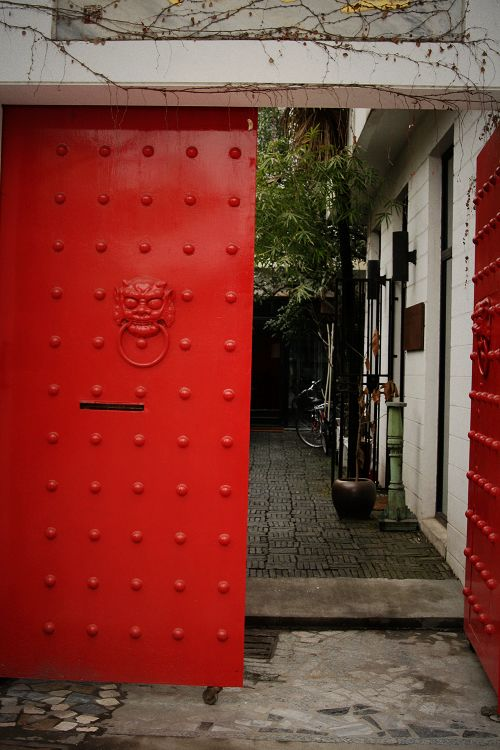
拥挤的街道上忽然出现这样一幕风景，是不是有些诧异？那里面通向的是什么样的院落呢？
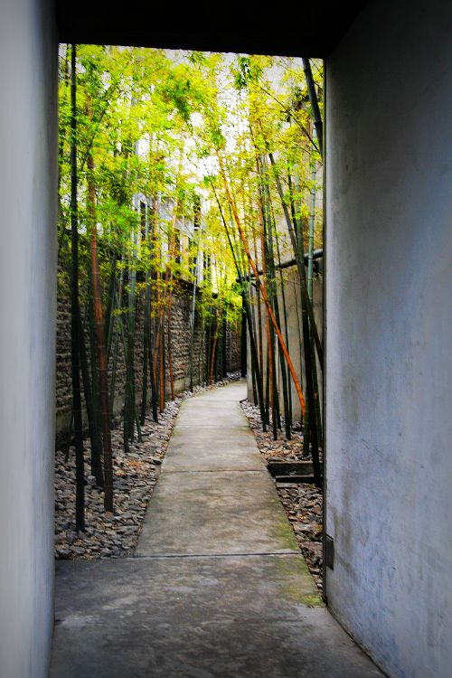
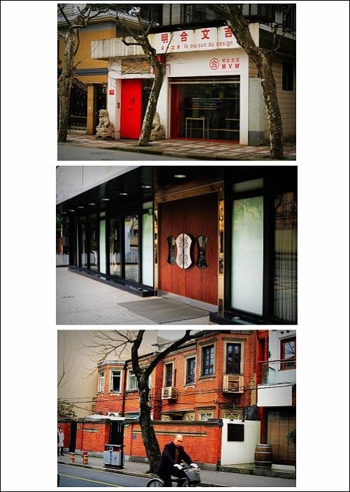
小街道的墙壁被刷上鲜亮的色彩，连窗户外的围栏拐角也被细心地包上了棉布。

消防栓？

这防护也能想出来？真是PF。